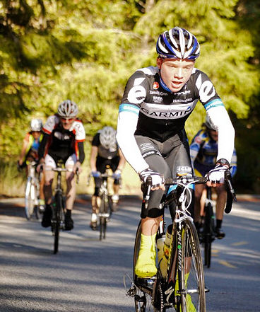

Low-Key Hillclimbs Aggregate Results:
Kings Mt Road
generated Fri Nov 4 10:34:14 PDT 2016
|
|  |
| 2011 week 8: Zeke Mostov was part of a strong junior turn-out (Judy Colwell) |
Results are listed here from the Low-Key archives, sorted by time for each climb. Some years start and/or finish time differ slightly, such as
with Kings Mt Road where after 1995 the start moved from Entrance Way to Greer.
Results are ranked by time first, score second.
Score is calculated using a simple percent-of-median-speed
formula, with time adjustments for division. These scores will generally differ from those calculated in the results for that particular year, since
the scoring scheme has evolved. Tandems are split between 1998, when they were counted as single participants, and other years, when the individual
riders have been counted separately
Results for Men
| rank | time | score | rider | cat | team | year | week | code |
|---|
| 1 | 19:08 | 135.932 | Ryan Sherlock | 25+ | Cycleways/Zipvit | 2011 | 8 | |
| 2 | 19:51 | 134.845 | Tracy Colwell | Public | Wheelsuckers | 1996 | 4 | |
| 3 | 20:16 | 128.331 | Emilio Barzini | U25 | Rush Racing/Reparto Corsa | 2011 | 8 | |
| 4 | 20:32 | 126.664 | Brian Lucido | Tandem | Sr's & Mr's of No Mercy | 2011 | 8 | |
| 5 | 20:36 | 126.254 | Adrien Costa | Junior | Chipotle Junior Development | 2011 | 8 | |
| 6 | 20:39 | 125.948 | Daniel Connelly | 3 | Low-Key | 2011 | 8 | |
| 7 | 21:14 | 122.488 | Murray Swanson | 40+ | Pen Velo/Pomodoro | 2011 | 8 | |
| 8 | 21:15 | 127.686 | Tim Clark | 35+ | Red Dragon | 2007 | 2 | |
| 9 | 21:22 | 121.724 | Tracy Colwell | 40+ | Team Colwell | 2011 | 8 | |
| 10 | 21:29 | 121.063 | Carl Nielson | 50+ | Sr's & Mr's of No Mercy | 2011 | 8 | |
| 11 | 21:35 | 127.181 | Daniel Connelly | 4 | Stanford/Wheelsmith | 1995 | 2 | |
| 12 | 21:46 | 124.655 | Mark Edwards | 45+ | Bike Trip/Symantec | 2007 | 2 | |
| 13 | 21:46 | 119.487 | Kieran Sherlock | 45+ | Western Wheelers | 2011 | 8 | |
| 14 | 21:49 | 119.213 | Ken Gallardo | 35+ | IronData Thirsty Bear | 2011 | 8 | |
| 15 | 21:52 | 118.941 | McLovin | 1 | The Brown Zone | 2011 | 8 | |
| 16 | 21:53 | 122.315 | Glenn Chadwick | USCF 5 | Wheelsuckers | 1996 | 4 | |
| 17 | 21:53 | 118.850 | Tim Clark | 40+ | Low-Key | 2011 | 8 | |
| 18 | 21:55 | 123.802 | Clark Foy | 40+ | San Jose Bike Club | 2007 | 2 | |
| 19 | 22:04 | 122.961 | Eric Balfus | 2 | | 2007 | 2 | |
| 20 | 22:08 | 117.508 | Zeke Mostov | Junior | Chipotle Junior Development | 2011 | 8 | |
| 21 | 22:09 | 120.843 | Chris Crawford | Public | Wheelsuckers | 1996 | 4 | |
| 22 | 22:11 | 117.243 | Clark Foy | 45+ | San Jose Bike Club | 2011 | 8 | |
| 23 | 22:12 | 120.571 | Thomas Lund | Public | Wheelsuckers | 1996 | 4 | |
| 24 | 22:12 | 117.155 | Steve Peck | 45+ | Western Wheelers | 2011 | 8 | M |
| 25 | 22:13 | 123.556 | Tom Hertenstein | 4 | Stanford/Wheelsmith | 1995 | 2 | |
| 26 | 22:20 | 122.910 | Jamie Willin | 35+ | Olympic Club | 1995 | 2 | |
| 27 | 22:22 | 121.311 | Daniel Connelly | 3 | TNT | 2007 | 2 | |
| 28 | 22:23 | 119.583 | Ruedi Brunner | None | Wheelsuckers | 1996 | 4 | |
| 29 | 22:26 | 115.936 | Nils Tikkanen | Honey Badger | Bike Trip/Symantec | 2011 | 8 | |
| 30 | 22:28 | 120.772 | Rupert Brauch | 3 | Alto Velo | 2007 | 2 | |
| 31 | 22:29 | 115.678 | James Porter | 3 | Western Wheelers | 2011 | 8 | |
| 32 | 22:30 | 118.963 | Michael Denardi | None | Sunnyvale-Cupertino CC 35-45 | 1996 | 4 | |
| 33 | 22:33 | 121.729 | Geo Kitta | Masters 1/2 | Pen Velo/Pomodoro | 1995 | 2 | |
| 34 | 22:37 | 114.996 | Rune Dahl | 45+ | Western Wheelers | 2011 | 8 | |
| 35 | 22:48 | 119.006 | Ken Gallardo | 30+ | Pen Velo/Pomodoro | 2007 | 2 | |
| 36 | 22:51 | 113.822 | Tom Gardin | 45+ | Western Wheelers | 2011 | 8 | |
| 37 | 22:53 | 118.572 | Greg McQuaid | 35+ | Western Wheelers | 2007 | 2 | |
| 38 | 22:54 | 118.486 | Tom Gardin | 35+ | | 2007 | 2 | |
| 39 | 22:55 | 113.491 | Bill Brier | 45+ | Team Fremont FFBC p/b Chipotle | 2011 | 8 | |
| 40 | 22:56 | 113.408 | Marcus Gosling | 40+ | Contentworks | 2011 | 8 | |
| 41 | 22:59 | 113.162 | Joe Sullivan | 35+ | San Jose Bike Club | 2011 | 8 | |
| 41 | 22:59 | 113.162 | Joe Fant | 50+ | San Jose Bike Club | 2011 | 8 | |
| 43 | 23:04 | 117.630 | Justin Lucke | Vegan | Google | 2007 | 2 | |
| 44 | 23:11 | 112.185 | Christian Paquet | | Doogie | 2011 | 8 | |
| 45 | 23:12 | 116.954 | Ammon Skidmore | 30+ | Team Roaring Mouse | 2007 | 2 | |
| 46 | 23:12 | 115.374 | Daniel Connelly | USCF 4 | TnT | 1996 | 4 | |
| 47 | 23:13 | 116.870 | Jenson Lee | 2 | Kahala La Grange | 2007 | 2 | |
| 48 | 23:16 | 111.784 | Chris Furgiuele | 35+ | Dolce Vita Cycling | 2011 | 8 | |
| 49 | 23:18 | 116.452 | Rich Hill | 40+ | LGBRC | 2007 | 2 | |
| 50 | 23:38 | 114.810 | Andrew Nevitt | 40+ | San Jose Bike Club | 2007 | 2 | |
| 51 | 23:40 | 113.099 | Lorin Hawley | USCF 4 | Apple Computer | 1996 | 4 | |
| 52 | 23:40 | 109.894 | Steven Enns | | Dirkless | 2011 | 8 | |
| 53 | 23:46 | 112.623 | Richard Long | USCF 4 | Sierra Speed Gel | 1996 | 4 | |
| 54 | 23:46 | 109.432 | Clark M. Natwick | 50+ | Pen Velo/Pomodoro | 2011 | 8 | |
| 55 | 23:50 | 109.126 | Bennett Chi Lee | 45+/Ponytail | Speedy Bees | 2011 | 8 | |
| 56 | 23:53 | 112.073 | Scott Rienhardt | Public | Wheelsuckers | 1996 | 4 | |
| 57 | 23:53 | 108.897 | Andy Crews | 40+ | Diablo | 2011 | 8 | |
| 58 | 23:57 | 111.761 | Eric Allen | Public | Sierra Speed Gel | 1996 | 4 | |
| 59 | 23:57 | 108.594 | Justin Lucke | Plant Based | LGBRC | 2011 | 8 | |
| 60 | 24:03 | 112.821 | Chris Soukup | 35+ | San Jose Bike Club | 2007 | 2 | |
| 61 | 24:04 | 108.068 | Tick Houk | 50+ | The Brown Zone | 2011 | 8 | |
| 62 | 24:06 | 107.918 | Klaus Fleischmann | 40= | | 2011 | 8 | |
| 63 | 24:07 | 107.844 | John Richardson | 55+ | Pen Velo/Pomodoro | 2011 | 8 | |
| 64 | 24:11 | 110.682 | John Hossack | None | Wheelsuckers | 1996 | 4 | |
| 65 | 24:13 | 110.530 | Bradford Smith | 35+ | Wheelsuckers | 1996 | 4 | |
| 66 | 24:15 | 110.378 | Chris Preas | Public | Wheelsuckers | 1996 | 4 | |
| 67 | 24:17 | 107.104 | Zachary W Beekler | 45+ | Pen Velo/Pomodoro | 2011 | 8 | |
| 68 | 24:18 | 111.660 | Joe Platin | 45+ | Bike Trip/Symantec | 2007 | 2 | |
| 69 | 24:22 | 106.737 | Tom Greene | 50+ | Pen Velo/Pomodoro | 2011 | 8 | |
| 70 | 24:24 | 106.592 | Kevin Keenan | 55+ | Sr's & Mr's of No Mercy | 2011 | 8 | |
| 71 | 24:25 | 112.423 | Richard Herms | 35+ | Team Adventure | 1995 | 2 | |
| 72 | 24:25 | 111.126 | Allen Wulczynski | 45+ | San Jose Bike Club | 2007 | 2 | |
| 73 | 24:26 | 112.347 | Kelly Johnson | Old Fart | Alto Velo | 1995 | 2 | |
| 74 | 24:26 | 111.050 | Joerg Heilig | 35+ | Google | 2007 | 2 | |
| 75 | 24:26 | 109.550 | Jim Wilkinson | 35+ | Sierra Speed Gel | 1996 | 4 | |
| 76 | 24:28 | 106.301 | Paul McKenzie | 55+ | Marc Pro - Strava | 2011 | 8 | |
| 77 | 24:29 | 106.229 | Stiffler Ingardia | 45+ | The Brown Zone | 2011 | 8 | |
| 78 | 24:33 | 110.523 | Eddie Broeder | Junior 15 | San Jose Bike Club | 2007 | 2 | |
| 79 | 24:34 | 105.868 | Alexander Komlik | 45+ | San Jose Bike Club | 2011 | 8 | |
| 80 | 24:36 | 111.585 | Geoff Chase | Flu Like Symptoms | Team Valley | 1995 | 2 | |
| 81 | 24:36 | 110.298 | Jeff Farnsworth | 50+ | San Jose Bike Club | 2007 | 2 | |
| 82 | 24:40 | 110.000 | DJ Novotney | 30+ | | 2007 | 2 | |
| 83 | 24:41 | 109.926 | Matt Boxemeier | 35+ | San Jose Bike Club | 2007 | 2 | |
| 84 | 24:42 | 105.297 | Jory Stein | 50+ | Pen Velo/Pomodoro | 2011 | 8 | |
| 85 | 24:43 | 108.294 | Greg Bloom | MTB | Wheelsuckers | 1996 | 4 | |
| 86 | 24:47 | 109.482 | Chris Heisterkamp | Male | Google | 2007 | 2 | |
| 87 | 24:49 | 104.802 | TOM FERREIRA | 45+ | Eden Bicycles | 2011 | 8 | |
| 88 | 24:51 | 104.661 | Dai Sieh | Robusto | The Brown Zone | 2011 | 8 | |
| 89 | 24:52 | 107.641 | Ken Straub | Public | Sunnyvale-Cupertino CC 35-45 | 1996 | 4 | |
| 90 | 24:55 | 108.896 | Shance Ordell | 35+ | Western Wheelers | 2007 | 2 | |
| 90 | 24:55 | 108.896 | Scott Martin | 50+ | Bike Trip/Symantec | 2007 | 2 | |
| 92 | 24:55 | 107.425 | Ted Jaworkski | 35+ | Wheelsuckers | 1996 | 4 | |
| 93 | 24:56 | 104.311 | Greg McQuaid | 40+ | Western Wheelers | 2011 | 8 | |
| 94 | 24:58 | 104.172 | Martin Hyland | 55+ | Western Wheelers | 2011 | 8 | |
| 95 | 25:04 | 103.757 | Bruce Gardner | 40+ | Sr's & Mr's of No Mercy | 2011 | 8 | |
| 96 | 25:05 | 103.688 | KP | None Of Your Bee's Wax | The Brown Zone | 2011 | 8 | |
| 97 | 25:07 | 109.290 | Rod Gatch | 40+ | San Jose Bike Club | 1995 | 2 | |
| 98 | 25:11 | 106.287 | Rob Schott | USCF 4 | Sunnyvale-Cupertino CC 35-45 | 1996 | 4 | |
| 99 | 25:15 | 103.003 | Denin Sahovic | 35+ | The Brown Zone | 2011 | 8 | |
| 99 | 25:15 | 103.003 | George Janour | 40+ | Bike Trip/Symantec | 2011 | 8 | |
| 101 | 25:17 | 102.868 | Adam Brinkman | 30+ | Dirkless | 2011 | 8 | |
| 102 | 25:22 | 102.530 | Erik Salander | 50+ | Pen Velo/Pomodoro | 2011 | 8 | |
| 103 | 25:24 | 108.071 | Philippe Sialm | Visitor From Europe | N/A | 1995 | 2 | |
| 104 | 25:26 | 106.684 | Fred E. Stamm | 55+ | Pen Velo/Pomodoro | 2007 | 2 | |
| 104 | 25:26 | 106.684 | Crist Clark | 35+ | Alto Velo | 2007 | 2 | |
| 106 | 25:26 | 105.242 | Bill Bushnell | Public | Western Wheelers | 1996 | 4 | |
| 107 | 25:28 | 102.127 | Russ McCrary | 50+ | Sr's & Mr's of No Mercy | 2011 | 8 | |
| 108 | 25:32 | 107.507 | Valery Axelrod | 35+ | Western Wheelers | 1995 | 2 | |
| 109 | 25:33 | 101.794 | Doug Reynolds | 60+ | Alberto's Steak House | 2011 | 8 | |
| 110 | 25:38 | 105.852 | Ian Sowden | | | 2007 | 2 | |
| 111 | 25:43 | 106.740 | Leo Wong | 5 | N/A | 1995 | 2 | |
| 112 | 25:43 | 104.083 | Gordan Good | USCF 3 | Sunnyvale-Cupertino CC 35-45 | 1996 | 4 | |
| 113 | 25:45 | 105.372 | Luke Burton | 5 | LGBRC | 2007 | 2 | |
| 114 | 25:46 | 105.304 | Michael Gonia | 40+ | Republic of Anaerobia | 2007 | 2 | |
| 115 | 25:46 | 103.881 | Pete Heller | Duck Club | Sunnyvale-Cupertino CC 35-45 | 1996 | 4 | |
| 116 | 25:52 | 100.548 | Markus Roccaro | Master 40+ | Pen Velo/Pomodoro | 2011 | 8 | |
| 116 | 25:52 | 100.548 | Takanobu seimiya | 40+ | Nikon Cycling Club | 2011 | 8 | |
| 118 | 25:54 | 103.346 | Archie King | 35+ | Wheelsuckers | 1996 | 4 | |
| 119 | 25:57 | 105.780 | Steve Blair | 40+ | Alto Velo | 1995 | 2 | |
| 120 | 25:57 | 100.225 | Scott Martin | 50+ | Bike Trip/Symantec | 2011 | 8 | |
| 121 | 25:59 | 104.426 | Steven Woo | 4 | LGBRC | 2007 | 2 | |
| 122 | 26:00 | 102.949 | John Alafouzos | Public | Sierra Speed Gel | 1996 | 4 | |
| 123 | 26:00 | 100.032 | Chuck Spiteri | 50+ | Pen Velo/Pomodoro | 2011 | 8 | |
| 124 | 26:01 | 99.968 | Philip Clark | 25+ | Google | 2011 | 8 | |
| 125 | 26:06 | 99.649 | Rob Cosaro | 50+ | Doogie | 2011 | 8 | |
| 126 | 26:10 | 99.395 | Alan Weatherall | | San Jose Bike Club | 2011 | 8 | |
| 127 | 26:11 | 102.228 | Duane Stephens | Public | TnT | 1996 | 4 | |
| 127 | 26:11 | 102.228 | Patrick Goebel | Triathlete | TnT | 1996 | 4 | |
| 129 | 26:15 | 101.968 | David Coale | Public | Western Wheelers | 1996 | 4 | |
| 130 | 26:16 | 99.016 | Naoto Sato | 45+ | | 2011 | 8 | |
| 131 | 26:21 | 98.703 | Dean Larson | 45+ | The Brown Zone | 2011 | 8 | |
| 132 | 26:24 | 103.977 | Mark Anderson | 5 | Alto Velo | 1995 | 2 | |
| 133 | 26:25 | 101.325 | Ken Sutton | 35+ | Wheelsuckers | 1996 | 4 | |
| 134 | 26:25 | 98.454 | Sami Laine | 40+ | Team Poseur | 2011 | 8 | |
| 135 | 26:27 | 102.583 | John Toor | 45+ | | 2007 | 2 | |
| 136 | 26:39 | 101.814 | Tom Workman | 40+ | STVC | 2007 | 2 | |
| 137 | 26:39 | 100.438 | Boos.Freddy | Wheelsuckers | Wheelsuckers | 1996 | 4 | |
| 138 | 26:43 | 100.187 | Brian Parker | Public | Wheelsuckers | 1996 | 4 | |
| 139 | 26:44 | 101.496 | Greg Dougald | 45+ | AV: Old Guys Finish | 2007 | 2 | |
| 140 | 26:45 | 101.433 | Christian Paquet | 50+ | Doogie | 2007 | 2 | |
| 141 | 26:46 | 100.000 | Rich Anderson | Public | Sierra Speed Gel | 1996 | 4 | |
| 142 | 26:46 | 97.167 | David Vrane | 45+ | Sr's & Mr's of No Mercy | 2011 | 8 | |
| 142 | 26:46 | 97.167 | Vince Cummings | 50+ | Alberto's Steak House | 2011 | 8 | |
| 144 | 26:47 | 102.489 | Ed Miller | 55+ | | 1995 | 2 | |
| 145 | 26:53 | 96.745 | Phil Cooper | 35+ | Pen Velo/Pomodoro | 2011 | 8 | |
| 146 | 26:54 | 96.685 | Thomas Rabedeau | 50+ | SLACer | 2011 | 8 | |
| 147 | 26:57 | 100.680 | Michael Kim | 45+ | | 2007 | 2 | |
| 148 | 26:57 | 99.320 | Lucas Pereira | Public | Wheelsuckers | 1996 | 4 | |
| 149 | 27:00 | 96.327 | Ron Abidog | 40+ | San Jose Bike Club | 2011 | 8 | |
| 150 | 27:02 | 96.208 | Brandon Iles | 25+ | Google | 2011 | 8 | |
| 151 | 27:05 | 100.185 | Rand Hill | 35+ | Apple | 2007 | 2 | |
| 152 | 27:06 | 101.292 | Mike Wilder | 40+ | San Jose Bike Club | 1995 | 2 | |
| 153 | 27:06 | 100.123 | Scott Khirck | Junior | Wild Things | 2007 | 2 | |
| 153 | 27:06 | 100.123 | Genti Cuni | | Climbing Turtles | 2007 | 2 | |
| 155 | 27:08 | 100.000 | Chris Harrison | Junior | La Dolce Velo | 2007 | 2 | |
| 155 | 27:08 | 100.000 | Dan Talayco | 40+ | Two Wheel Tango | 2007 | 2 | |
| 157 | 27:12 | 98.407 | Brian Begley | USCF 5 | Sunnyvale-Cupertino CC 35-45 | 1996 | 4 | |
| 158 | 27:13 | 98.347 | John Beschle | Public | Wheelsuckers | 1996 | 4 | |
| 159 | 27:16 | 95.385 | Jeff Shute | 30+ | Google | 2011 | 8 | |
| 160 | 27:19 | 99.329 | Joshua Hadley | | Republic of Anaerobia | 2007 | 2 | |
| 161 | 27:20 | 97.927 | Luther Pugh | 35+ | Mako-Silks | 1996 | 4 | |
| 162 | 27:21 | 95.094 | Matt Alcorn | 25+ | Eden Bicycles | 2011 | 8 | |
| 163 | 27:23 | 100.243 | Mark Rodamaker | Grandfather | Alto Velo | 1995 | 2 | |
| 164 | 27:24 | 99.027 | Calvin Do | 35+ | Skinny slow guys | 2007 | 2 | |
| 165 | 27:24 | 94.921 | Peter Tapscott | 60+ | Webcor | 2011 | 8 | |
| 166 | 27:25 | 98.967 | Gary Broder | 50+ | San Jose Bike Club | 2007 | 2 | |
| 167 | 27:30 | 98.667 | Michael Czepiel | 20+ | Apple | 2007 | 2 | |
| 168 | 27:30 | 97.333 | Eric Rescorla | Public | Wheelsuckers | 1996 | 4 | |
| 169 | 27:31 | 99.758 | John Alafouzos | 40+ | Team Adventure | 1995 | 2 | |
| 170 | 27:37 | 96.922 | Dan Siehl | Public | TnT | 1996 | 4 | |
| 171 | 27:38 | 99.337 | Brendan Leary | 5 | Alto Velo | 1995 | 2 | |
| 172 | 27:39 | 98.131 | Paul Melville | 55+ | Doogie | 2007 | 2 | |
| 173 | 27:44 | 96.514 | Jonathan Martinez | Public | Wheelsuckers | 1996 | 4 | |
| 174 | 27:45 | 97.778 | Matt Rodnick | Recreational | | 2007 | 2 | |
| 175 | 27:46 | 98.860 | Bob McDermand | 50+ | San Jose Bike Club | 1995 | 2 | |
| 176 | 27:46 | 93.667 | MichaelsJ. Andalora | 55+ | | 2011 | 8 | |
| 177 | 27:48 | 96.283 | Val Hargrove | 35+ | Bergmeister | 1996 | 4 | |
| 178 | 27:49 | 93.499 | Robert Zeljko | 40+ | | 2011 | 8 | |
| 179 | 27:50 | 96.168 | Stuart Calhoon | 45+ | Wheelsuckers | 1996 | 4 | |
| 180 | 27:52 | 97.368 | Paul Forti | 30+ | | 2007 | 2 | |
| 181 | 27:53 | 97.310 | Pete Jollymour | 6 | | 2007 | 2 | |
| 182 | 27:54 | 93.220 | Jim Williams | 60+ | Alberto's Steak House | 2011 | 8 | |
| 183 | 27:55 | 98.328 | Jim Haughey | Self-Employed | Western Wheelers | 1995 | 2 | |
| 184 | 27:56 | 95.823 | Ron Lebard | 45+ | Wheelsuckers | 1996 | 4 | |
| 185 | 27:57 | 97.078 | Rafael Ornes | 45+ | Born 2 Bonk | 2007 | 2 | |
| 186 | 28:00 | 95.595 | Mike Mostats | Public | TnT | 1996 | 4 | |
| 187 | 28:05 | 96.617 | Todd Manley | 6'9 | San Jose Bike Club | 2007 | 2 | |
| 188 | 28:06 | 95.255 | Larry Bolander | 45+ | TnT | 1996 | 4 | |
| 189 | 28:07 | 92.501 | Larry Klein | 50+ | Doogie | 2011 | 8 | |
| 190 | 28:08 | 92.447 | Jon Degenhardt | 50+ | Alameda Velo | 2011 | 8 | |
| 191 | 28:11 | 92.283 | Paul Melville | 60+ | Doogie | 2011 | 8 | |
| 192 | 28:13 | 94.861 | Chris Weiler | Clydesdale | Wheelsuckers | 1996 | 4 | |
| 193 | 28:16 | 94.693 | Millo Fenzi | 180lb+ | Wheelsuckers | 1996 | 4 | |
| 194 | 28:18 | 91.902 | Ryan Powell | 35+ | Team Joe Karbowski | 2011 | 8 | |
| 195 | 28:20 | 95.765 | Stephen Fong | 5 | Blubber Busters | 2007 | 2 | |
| 196 | 28:25 | 91.525 | Matthew Werner | 50+ | Bike Trip/Symantec | 2011 | 8 | |
| 197 | 28:27 | 96.485 | Richard Bone | 28 Yr Old Eng | Western Wheelers | 1995 | 2 | |
| 198 | 28:28 | 91.364 | Cory Roay | 50+ | Pen Velo/Pomodoro | 2011 | 8 | |
| 199 | 28:37 | 95.923 | David Fisher | 5 | Alto Velo | 1995 | 2 | |
| 200 | 28:37 | 93.535 | Alex Mathews | None | Wheelsuckers | 1996 | 4 | |
| 201 | 28:40 | 90.727 | Detlef Adam | 45+ | Bike Trip/Symantec | 2011 | 8 | |
| 202 | 28:41 | 94.596 | Steve Sprang | 30+ | Apple | 2007 | 2 | |
| 203 | 28:43 | 90.569 | Giles Douglas | 35+ | Google | 2011 | 8 | |
| 203 | 28:43 | 90.569 | Richard Siegel | 50+ | Above Category Racing | 2011 | 8 | |
| 205 | 28:45 | 93.101 | Henry Hurkmans | 180lb+ | Fremont Freewheelers BC | 1996 | 4 | |
| 206 | 28:49 | 94.158 | John Mitchell | 50+ | Western Wheelers | 2007 | 2 | |
| 207 | 28:54 | 92.618 | Phil Sienna | 45+ | Wheelsuckers | 1996 | 4 | |
| 208 | 28:55 | 93.833 | Sean Broeder | 35+ | Silicon Valley Triathlon | 2007 | 2 | |
| 209 | 28:56 | 89.891 | Franz Kelsch | 60+ | Alberto's Steak House | 2011 | 8 | |
| 210 | 28:58 | 94.764 | Pete Petroski | Beyond | Western Wheelers | 1995 | 2 | |
| 211 | 28:58 | 92.405 | Robert Spatta | USCF 5 | Wheelsuckers | 1996 | 4 | |
| 212 | 29:05 | 94.384 | Mark Clem | Overweight | Santa Clara Universit | 1995 | 2 | |
| 213 | 29:12 | 91.667 | Eric Evitt | 35+ | Wheelsuckers | 1996 | 4 | |
| 214 | 29:13 | 92.869 | Jorge Chang | Infinity | Blubber Busters | 2007 | 2 | |
| 215 | 29:15 | 92.764 | John Hosteler | 45+ | San Jose Bike Club | 2007 | 2 | |
| 216 | 29:31 | 88.114 | Mike James | | Pen Velo/Pomodoro | 2011 | 8 | |
| 217 | 29:36 | 87.866 | Michael Riepe | 40+ | Alto Velo | 2011 | 8 | |
| 218 | 29:38 | 91.564 | Jay Kilby | 40+ | LGBRC | 2007 | 2 | |
| 219 | 29:40 | 87.669 | Frank Drobot | 60+ | | 2011 | 8 | |
| 220 | 29:43 | 91.307 | Bogdan Florea | 35+ | | 2007 | 2 | |
| 221 | 29:45 | 91.204 | Keith Devlin | 60+ | Western Wheelers | 2007 | 2 | |
| 222 | 29:56 | 90.646 | David Cook | Slow | Balboa | 2007 | 2 | |
| 223 | 30:06 | 88.926 | Al Begley | Public | Wheelsuckers | 1996 | 4 | |
| 224 | 30:09 | 86.263 | Steve Chapel | 65+ | Western Wheelers | 2011 | 8 | |
| 225 | 30:10 | 86.215 | Henry James | | Pen Velo/Pomodoro | 2011 | 8 | |
| 226 | 30:14 | 86.025 | Lei Oh | 40+ | Pen Velo/Pomodoro | 2011 | 8 | |
| 227 | 30:17 | 89.598 | Guy Coté | 35+ | | 2007 | 2 | |
| 228 | 30:20 | 88.242 | Mike Trowbridge | Tandem(Mixed) | TnT | 1996 | 4 | |
| 229 | 30:24 | 88.048 | Mark Rodemaker | 45+ | Sunnyvale-Cupertino CC 35-45 | 1996 | 4 | |
| 230 | 30:31 | 89.951 | Achut Reddy | 4 | Alto Velo | 1995 | 2 | |
| 231 | 30:32 | 85.180 | Riley Auten | Junior | | 2011 | 8 | |
| 232 | 30:34 | 87.568 | Thomas Maslen | Public | Western Wheelers | 1996 | 4 | |
| 233 | 30:39 | 87.330 | Jim Pflasterer | 35+ | Wheelsuckers | 1996 | 4 | |
| 234 | 30:41 | 87.235 | Gary Herman | 45+ | Western Wheelers | 1996 | 4 | |
| 235 | 30:44 | 89.317 | Joseph Maurer | 40+ | Good Times | 1995 | 2 | |
| 236 | 30:49 | 84.397 | David Fitch | 65+++ | Western Wheelers | 2011 | 8 | |
| 237 | 30:51 | 84.306 | Jan Berka | 45+ | | 2011 | 8 | |
| 238 | 30:55 | 87.763 | Martin Hampton | | Pen Velo/Pomodoro | 2007 | 2 | |
| 239 | 30:57 | 88.691 | Henry Hurkmans | 4 | Fremont Freewheeler | 1995 | 2 | |
| 240 | 30:58 | 86.437 | Karl Yorston | 35+ | Wheelsuckers | 1996 | 4 | |
| 241 | 31:05 | 83.673 | Kevin Colagiovanni | 25+ | Team DUD | 2011 | 8 | |
| 242 | 31:07 | 86.020 | Mike Weston | Public | Western Wheelers | 1996 | 4 | |
| 243 | 31:13 | 86.919 | Wade Bastien | 35+ | | 2007 | 2 | |
| 243 | 31:13 | 86.919 | Teodor Doru Cuturela | 30+ | | 2007 | 2 | |
| 245 | 31:20 | 86.596 | Dan Stober | 55+ | Western Wheelers | 2007 | 2 | |
| 246 | 31:25 | 82.785 | Peter Andrious | 35+ | Team Poseur | 2011 | 8 | |
| 247 | 31:26 | 85.154 | Tom Lowman | 55+ | Wheelsuckers | 1996 | 4 | |
| 248 | 31:30 | 87.143 | Brittain Chency | 5 | N/A | 1995 | 2 | |
| 249 | 31:33 | 82.435 | Jerry Hitchcock | 55+ | Wolfpack | 2011 | 8 | |
| 250 | 31:44 | 81.959 | Stephen Fong | 5 | San Jose Bike Club | 2011 | 8 | |
| 251 | 31:45 | 81.916 | Clinton Bauder | 40+ | Team Poseur | 2011 | 8 | |
| 252 | 31:50 | 84.084 | Eric Johnson | Public | Wheelsuckers | 1996 | 4 | |
| 253 | 32:08 | 84.440 | Paul Schreiber | Slow | Apple | 2007 | 2 | |
| 254 | 32:18 | 84.004 | Adam Tow | Infinity | Blubber Busters | 2007 | 2 | |
| 255 | 32:29 | 83.530 | Todd Benjamin | 40+ | Apple | 2007 | 2 | |
| 256 | 32:30 | 82.359 | Dick Robinson | 45+ | TnT | 1996 | 4 | |
| 257 | 32:36 | 79.780 | Richard Allen | 60+ | Sr's & Mr's of No Mercy | 2011 | 8 | |
| 258 | 32:58 | 81.193 | Randy Nelson | Public | Big C | 1996 | 4 | |
| 259 | 32:59 | 78.853 | Luis Valente | 50+ | Palo Verde Velo | 2011 | 8 | |
| 260 | 33:03 | 78.694 | Chris Lipp | | | 2011 | 8 | |
| 261 | 33:40 | 80.594 | Rich Brunner | 39ish | Cruzie | 2007 | 2 | |
| 262 | 33:49 | 80.237 | Murali Krishnan | 35+ | Commuter | 2007 | 2 | |
| 263 | 34:00 | 78.725 | Wyland Love | USCF 5 | Wheelsuckers | 1996 | 4 | |
| 264 | 34:07 | 76.234 | Rick Reid | 40+ | Toady | 2011 | 8 | |
| 265 | 34:23 | 77.848 | Stephen Morris | Public | Geriatrics | 1996 | 4 | |
| 266 | 34:40 | 75.024 | Bill Pierce | | | 2011 | 8 | |
| 267 | 34:43 | 78.157 | Jonathan Racine | 35+ | San Jose Bike Club | 2007 | 2 | |
| 268 | 34:44 | 79.031 | Stef Sonck | Philosophers | N/A | 1995 | 2 | |
| 269 | 34:44 | 78.119 | Derrick Hemingway | 40+ | San Jose Bike Club | 2007 | 2 | |
| 270 | 35:03 | 74.204 | Frank Viggiano | 50+ | Palo Verde Velo | 2011 | 8 | |
| 271 | 35:49 | 72.615 | Sachin Bhatia | 30+ | | 2011 | 8 | |
| 272 | 35:50 | 72.581 | Craig Sanders | 50+ | | 2011 | 8 | |
| 273 | 35:54 | 76.462 | Jonathan Kaplan | Philosophers | Western Wheelers | 1995 | 2 | |
| 274 | 36:02 | 76.179 | David Casseres | Old Fart | N/A | 1995 | 2 | |
| 274 | 36:02 | 76.179 | George Bunting | Granny | N/A | 1995 | 2 | |
| 276 | 36:49 | 70.643 | Alec Proudfoot | 45+ | Google | 2011 | 8 | |
| 277 | 37:38 | 69.110 | Michael Ahern | 45+ | LGBRC | 2011 | 8 | |
| 278 | 38:29 | 70.507 | Richard Allen | 55+ | Alto Velo | 2007 | 2 | |
| 279 | 38:48 | 68.986 | John Vogel | 45+ | TnT | 1996 | 4 | |
| 280 | 39:10 | 66.404 | Skyler Colwell | Junior | Team Colwell | 2011 | 8 | |
| 281 | 44:02 | 59.065 | Ashutosh Kaushik | 25+ | | 2011 | 8 | |
| 282 | 47:54 | 54.297 | Liam Colwell | Junior | Team Colwell | 2011 | 8 | |
M : mishap
Results for Hybrid Electric
| rank | time | score | rider | cat | team | year | week | code |
|---|
| 1 | 14:01 | 107.817 | Bill Bushnell | Its All About The Bike | Low-Key | 2011 | 8 | |
| 2 | 19:24 | 81.268 | Bill Bushnell | Hybrid | TNT | 2007 | 2 | |
Results for Women
| rank | time | score | rider | cat | team | year | week | code |
|---|
| 1 | 25:58 | 120.821 | Lisa Penzel | 45+ | Low-Key | 2011 | 8 | |
| 2 | 26:10 | 123.393 | Laura Stern | 35+ | Wheelsuckers | 1996 | 4 | |
| 3 | 26:16 | 119.441 | Helen Casabona | 50+ | Pen Velo/Pomodoro | 2011 | 8 | |
| 4 | 26:37 | 117.870 | LT | This Is The Off Season? | The Brown Zone | 2011 | 8 | |
| 5 | 26:52 | 120.178 | Kristen Neubauer | Wpublic | Wheelsuckers | 1996 | 4 | |
| 6 | 27:05 | 115.839 | Lesley Butler | 35+ | Sr's & Mr's of No Mercy | 2011 | 8 | |
| 7 | 27:09 | 120.553 | Anny Henry | 3 | CRC | 2007 | 2 | |
| 8 | 27:14 | 115.201 | McLovely | 1 | The Brown Zone | 2011 | 8 | |
| 9 | 27:19 | 114.850 | Rhonda Serr | 30+ | The Brown Zone | 2011 | 8 | |
| 10 | 27:20 | 118.126 | Liz Benishin | Fried | Sunnyvale-Cupertino CC 35-45 | 1996 | 4 | |
| 11 | 27:30 | 114.084 | Jennie Phillips | Tandem-Onium! | Sr's & Mr's of No Mercy | 2011 | 8 | |
| 12 | 28:11 | 114.564 | Lisa Antonino | Wpublic | Sunnyvale-Cupertino CC 35-45 | 1996 | 4 | |
| 13 | 28:17 | 117.073 | Linda Elgart | Women Almost 40 | Alto Velo | 1995 | 2 | |
| 14 | 28:44 | 109.187 | Lynn Sestak | 50+ | San Jose Bike Club | 2011 | 8 | |
| 15 | 29:05 | 107.873 | Laura Hipp | 4 | Western Wheelers | 2011 | 8 | |
| 16 | 29:07 | 107.750 | Jamie Yang | 25+ | | 2011 | 8 | |
| 16 | 29:07 | 107.750 | Mary Ellen Allen | 45++++ | Sr's & Mr's of No Mercy | 2011 | 8 | |
| 18 | 29:23 | 111.390 | Margie Biddick | 4 | Bike Trip/Symantec | 2007 | 2 | |
| 19 | 30:20 | 106.444 | Charlotte Jacobson | Tandem(Mixed) | TnT | 1996 | 4 | |
| 20 | 30:29 | 102.919 | kstiv | 40+ | The Brown Zone | 2011 | 8 | |
| 21 | 30:56 | 104.379 | Julie Colwell | Wpublic | Sunnyvale-Cupertino CC 35-45 | 1996 | 4 | |
| 22 | 31:05 | 106.527 | Cheryl Herms | 35+ | Team Adventure | 1995 | 2 | |
| 23 | 31:44 | 98.865 | Lori Fabris | 50+ | Plus 3 | 2011 | 8 | |
| 24 | 32:15 | 100.118 | Phyllis Olrich | 45+ | Wheelsuckers | 1996 | 4 | |
| 25 | 32:42 | 100.092 | Mary Ellen Allen | 55+ | Alto Velo | 2007 | 2 | |
| 26 | 34:08 | 91.913 | Vanessa McDonnell | 40+ | Team Fremont FFBC p/b Chipotle | 2011 | 8 | |
| 27 | 34:11 | 91.779 | Lisa Emmerich | 50+ | Sr's & Mr's of No Mercy | 2011 | 8 | |
| 28 | 34:14 | 95.609 | Kelly Kasik | | | 2007 | 2 | |
| 29 | 34:52 | 94.968 | Crystal Thorpe | Philosophers | Western Wheelers | 1995 | 2 | |
| 30 | 35:12 | 89.128 | Heidi Fraser | 50+ | | 2011 | 8 | |
| 31 | 36:02 | 91.893 | Barbara Titel | Granny | N/A | 1995 | 2 | |
| 32 | 36:15 | 90.290 | Christie Craig | Slow | | 2007 | 2 | |
| 33 | 36:18 | 88.947 | Pat Baenen | Fried | Sunnyvale-Cupertino CC 35-45 | 1996 | 4 | |
| 34 | 36:23 | 86.229 | Danielle Dettling | 30+ | Rinat | 2011 | 8 | |
| 35 | 36:40 | 88.058 | Roxanne Robinson | 45+ | TnT | 1996 | 4 | |
| 36 | 36:54 | 87.501 | Kana Saibuya | Wpublic | Wheelsuckers | 1996 | 4 | |
| 37 | 37:06 | 88.222 | Nuria Bertran | Beginner | Climbing Turtles | 2007 | 2 | |
| 38 | 37:40 | 86.894 | Marie Borselle | 40+ | Velo Girls | 2007 | 2 | |
| 39 | 39:00 | 80.444 | Alison Chaiken | 45+ | Sr's & Mr's of No Mercy | 2011 | 8 | |
| 40 | 40:37 | 77.242 | Christine Holmes | 45+ | Low-Key | 2011 | 8 | |
| 41 | 41:13 | 76.118 | Andrea Ivan | | | 2011 | 8 | |
| 42 | 41:57 | 78.022 | Pat Parseghian | 50+ | Google | 2007 | 2 | |
| 43 | 43:29 | 75.271 | Christine Holmes | 40+ | Librarian | 2007 | 2 | |
| 44 | 44:12 | 74.050 | Amy Tam | | Velo Girls | 2007 | 2 | |
| 45 | 45:30 | 68.952 | Pat Parseghian | 55+ | Google | 2011 | 8 | |
| 46 | 54:04 | 58.027 | Cindi Thompson | | | 2011 | 8 | |
Results for Tandem
| rank | time | score | rider | cat | team | year | week | code |
|---|
| 1 | 30:17 | 89.598 | Bob Parker | 50+ | AV: Old Guys Finish | 2007 | 2 | |
| 1 | 30:17 | 89.598 | Ileana Parker | Tandem | Alto Velo | 2007 | 2 | |
| 3 | 30:54 | 84.169 | Adela Skidmore | 5-/Toddler Tow | Team Roaring Mouse | 2011 | 8 | |
| 3 | 30:54 | 84.169 | Ammon Skidmore | 35+ | Team Roaring Mouse | 2011 | 8 | |
| 5 | 34:43 | 74.916 | Will von Kaenel | 50+ | LGBRC | 2011 | 8 | |
| 5 | 34:43 | 74.916 | Lynn von Kaenel | | LGBRC | 2011 | 8 | |